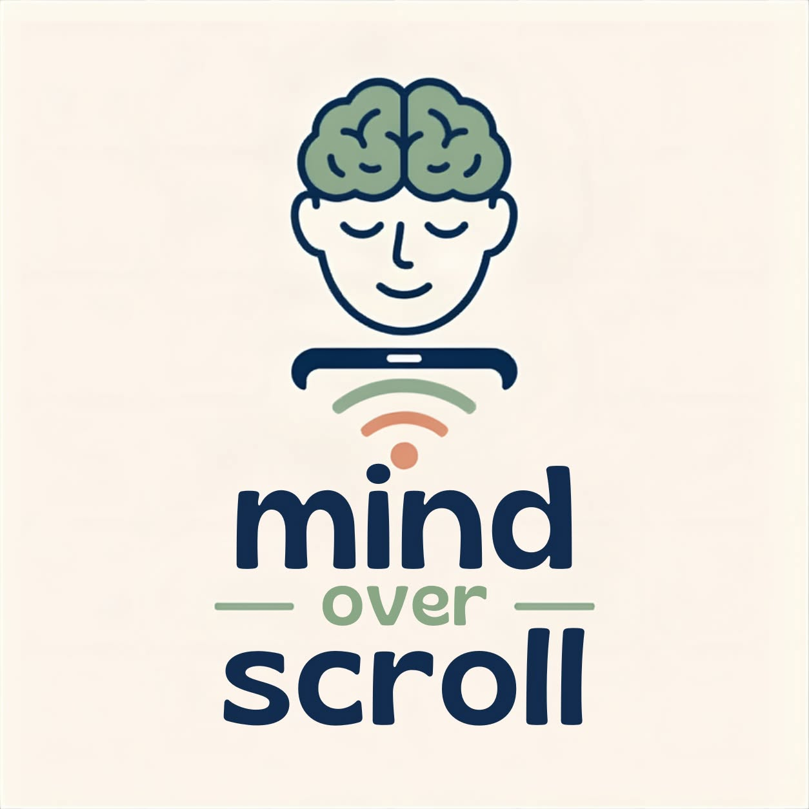
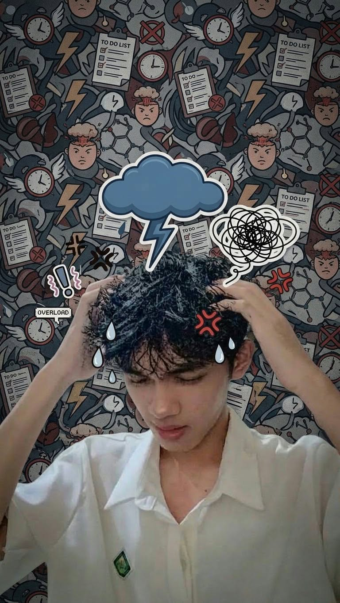
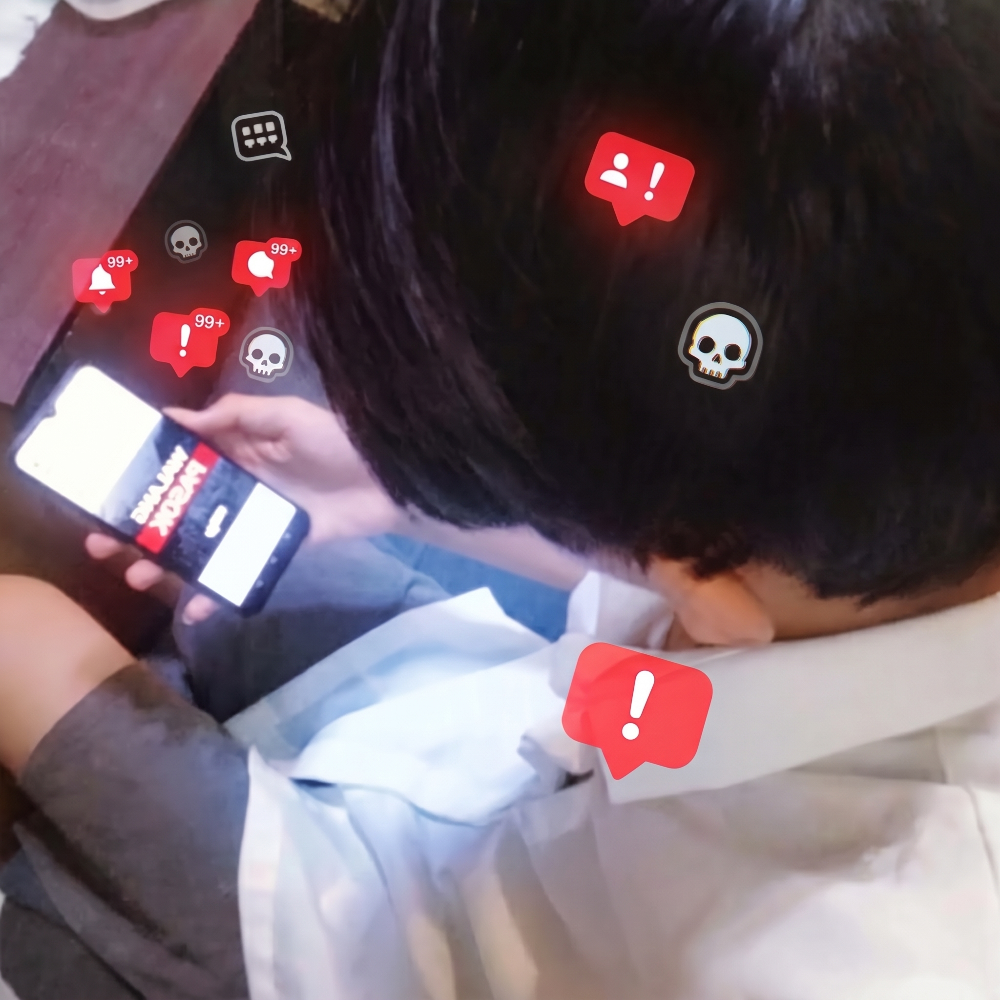

YOUR SCREEN SHOULDN'T CONTROL YOU
Don't quit technology. Learn to use it properly

Don't quit technology. Learn to use it properly
Understanding the impact of unmonitored screen time on young learners.
Over 70% of students spend 5+ hours daily on short-form video feeds, leading to shortened attention spans.

Continuous information overload contributes to heightened anxiety, social comparison, and brain fog.
Late-night phone usage directly degrades memory retention and classroom engagement.

Constant exposure to trends, opinions, and idealized lifestyles can shape how young people think, behave, and view themselves and others.
Actionable, student-friendly habits to rebuild healthy screen boundaries.
Keep mobile devices turned off or out of reach 45 minutes before bedtime and 30 minutes after waking up.
Silence non-human alerts and social media banners during designated study sessions and group tasks.
Dedicate at least 1 hour every evening to physical exercise, reading, or face-to-face interaction.
Phase 1 · Awareness
2 of 30 days done
Days 1–7 · Awareness
Days 8–14 · Interrupt
Days 15–21 · Replace
Days 22–30 · Balance
Join fellow students in committing to healthy screen habits.